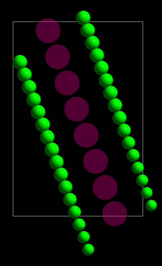
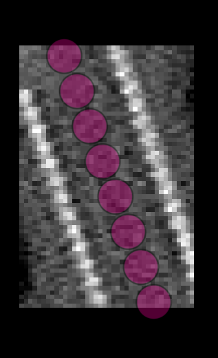

Learning CFT
cylindra uses the cylindric Fourier transform (CFT) of a cylinder to calculate its
lattice parameters. Although its mathematical background is not very complicated,
understanding how lattice structures, tilt series acquisition schemes, and the
orientation of the cylinder relative to the tilt axis will affect the CFT is not easy.
In this section, you can learn how CFT changes as the result of different parameters by simulating cylindric structures by yourself.
Simulate a simple cylinder
Using the simulator widget, you can simulate a tomogram with different
components, tilt angles, noise levels and so on. For now, we only need a simple cylinder
in a tomogram, so a straight cylinder is enough. For this purpose,
create_image_with_straight_line is useful.
Note
You can also run these methods in GUI. See Simulate Tomograms for more details.
Open the integrated console by Ctrl+Shift+C and run:
length = 60.0
ui.simulator.create_image_with_straight_line(
length=length, # length of the cylinder
size=(40.0, length, 40.0), # size of the tomogram
scale=1.0, # pixel scale (nm/pixel)
yxrotation=20.0, # rotation of the cylinder (degrees) in the YX plane
)
Hint
- The size of the empty image is very small to save the reconstruction time, but is large enough to contain a small cylinder fragment.
- Don't use pixel sizes as fine as the actual data collection. CFT analysis does
not require high-frequency information, so smaller pixel size just increases the
computation time without any benefit. If the representative periodicity of the
lattice is
L, optimal pixel size is betweenL/8andL/4(0.5 - 1.0 nm/pixel for microtubules).
generate_molecules will
assign the given lattice parameters to the spline and map molecules around the spline
according to the parameters. Here we will use the parameters for the ordinary 14_3
microtubule.
ui.simulator.generate_molecules(
spline=0,
spacing=4.1,
twist=-0.25,
start=3,
npf=14,
radius=11.0
)
The viewer canvas now shows a straight cylinder.

Simulate a tomogram
Now, we can simulate a tomogram with the generated molecules. Because we immediately
need the tomogram in the viewer, we can use simulate_tomogram_and_open. You can download a low-resolution
tubulin structure in the test directory of cylindra repository.
tubulin_path = "path/to/tubulin.mrc"
mole_layer = ui.mole_layers[-1] # the just added molecules layer
ui.simulator.simulate_tomogram_and_open(
components=[(mole_layer, tubulin_path)],
nsr=0.1,
tilt_range=(-60.0, 60.0),
n_tilt=21,
interpolation=1,
)

Hint
You don't need to simulate as many tilt angles as the actual data collection. For
most of the cases, 21 tilts between -60 and 60 degrees are enough. You can even use
n_tilt=13 with little difference.
Plot the power spectrum
To sample a short fragment from the tomogram, the spline_slicer widget is useful. It
implements methods to get subtomograms and power spectra along the spline. Here we can
use get_cylindric_power_spectrum to get the CFT of the cylinder.
To plot the power spectra, we can use the popular matplotlib
package.
img = ui.spline_slicer.get_cylindric_power_spectrum(spline=0, pos=length / 2)
plt.imshow(img.imshow, cmap="gray") # plot the power spectrum